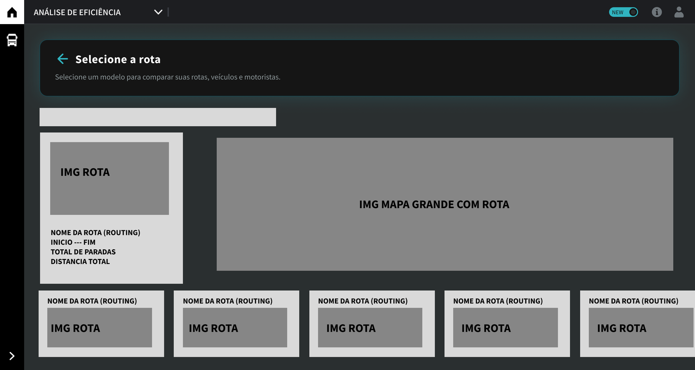
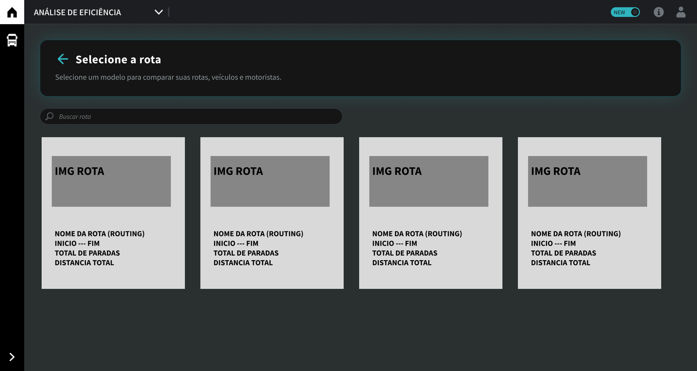
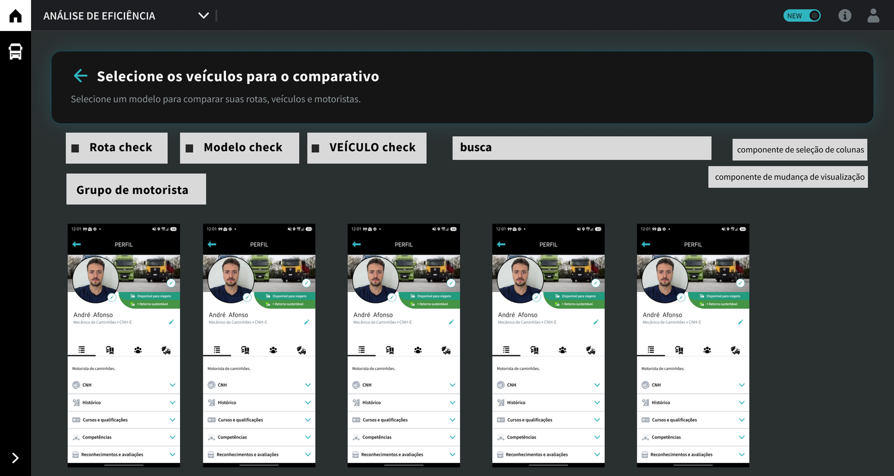
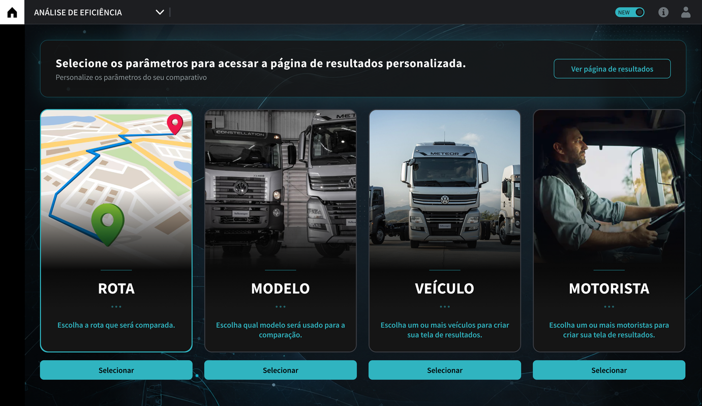
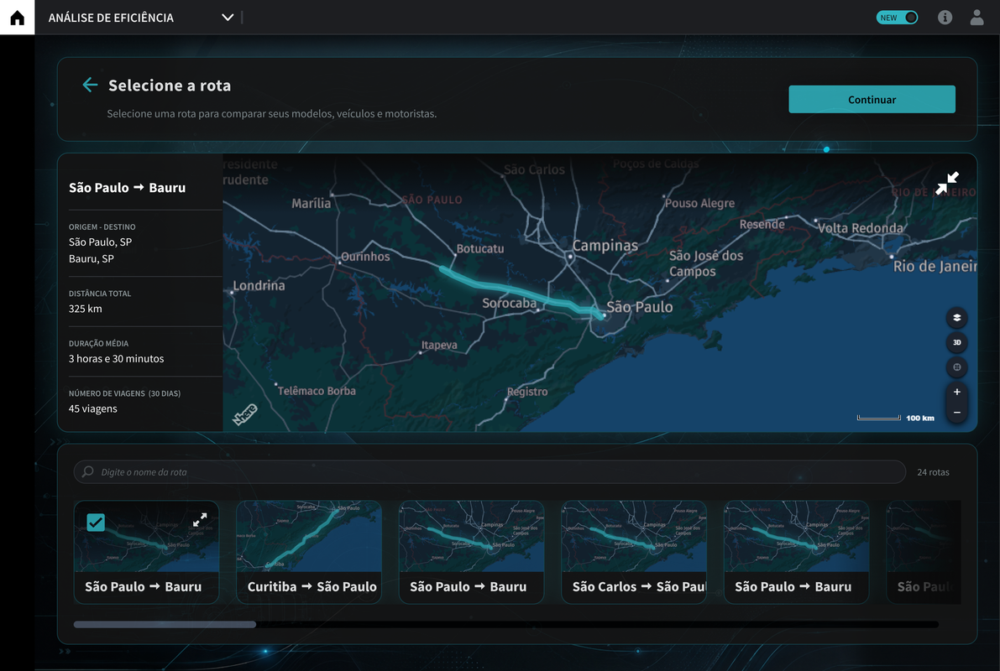
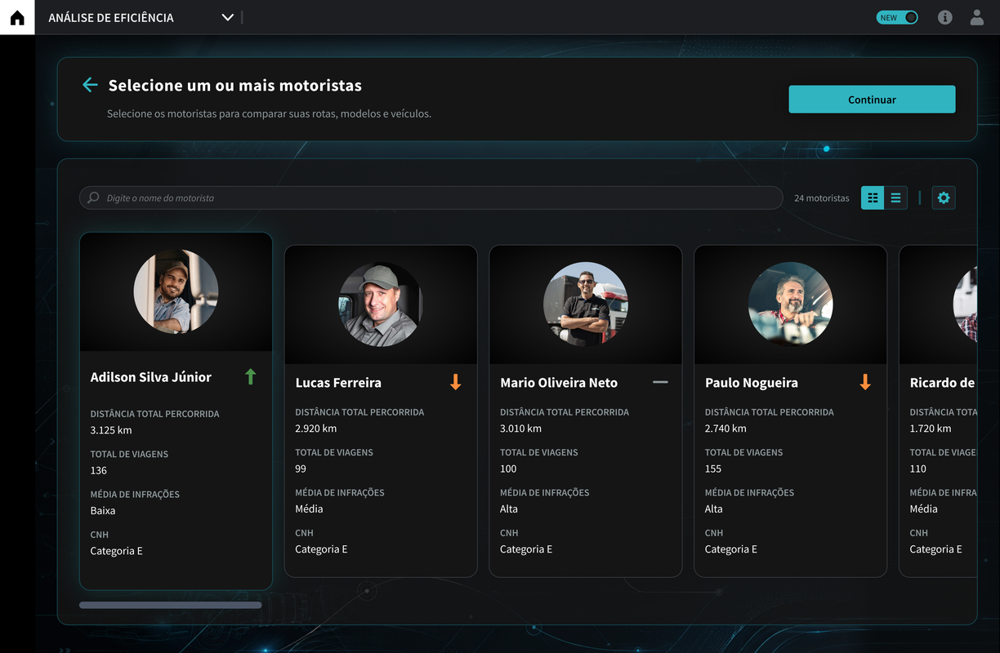
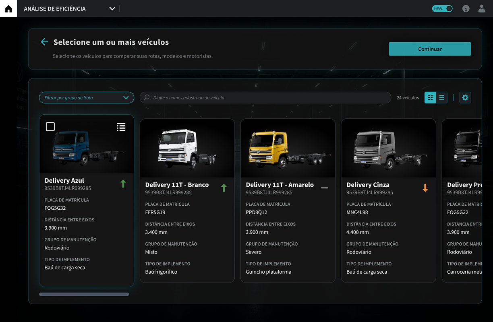
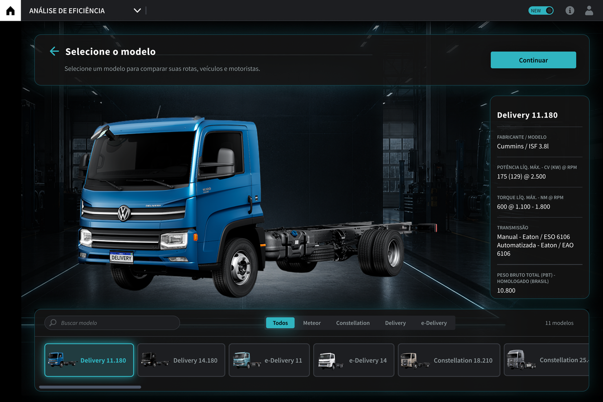

Turning fragmented data into a single comparison experience
Fleet managers already had access to a large amount of data about vehicles, routes, and drivers. The problem was that this information was scattered across different platforms.
Context
Volkswagen Trucks and Buses uses the RIO ecosystem to track different aspects of fleet operations.
Data on driver behavior, vehicles, routes, and operational efficiency was already available, but distributed across different platforms and dashboards.
The challenge
For a fleet manager to build a complete picture, it was necessary to navigate between different parts of the product, interpret information separately, and mentally connect the data. The manager had access to the data, but not necessarily to the relationship between it.
Information about a driver's profile could be on one platform. Route-related data was on another. Vehicle behavior and performance information showed up on other dashboards. This made it difficult to answer important operational questions.
What I did
I took part in discovery and co-creation sessions with Volkswagen directors and stakeholders, turning strategic discussions into product flows and hypotheses. I was responsible for evolving the experience architecture, creating wireframes, validating hypotheses with Engineering, mapping the real availability of data, and defining the final interface.
The result
The solution created a new comparison experience based on four main pillars: Route · Model · Vehicle · Driver.
The project was approved by the board, moved into production, and became a reference for new experiences within the product.
Intro
Data
The problem wasn't a lack of information.
In the early product discussions, it became clear that Volkswagen already had a large amount of data. The challenge was understanding which information could actually work together.
The data came from different telemetry and operational tracking platforms, all related to vehicle and driver behavior.
Among the available indicators were:
EPK, speeding, green band, harsh braking, fuel consumption, harsh acceleration from a stop, sudden acceleration, emissions, excessive idle + AC time, idle time, excessive RPM, clutch use, and average speed.
But data availability doesn't mean ease of analysis.
connected pillars
flows explored
indicators analyzed
Challenge
-
01
Order of the Pillars
The order of the pillars went through several versions. Different entry points seemed to offer more freedom, but created a new decision before the analysis even began.
-
02
Too Much Flexibility
Where should I start? Which data point should I pick first? The experience had too much flexibility before establishing context.
-
03
Guided, But Not Restrictive
Route became the mandatory starting point: Route → Model → Vehicle and/or Driver, without turning the flow into a rigid path.
Solution
Discovery and Co-creation
The discovery sessions brought together Volkswagen directors, stakeholders, Engineering, the requirements team, and Design to align on definitions.
The experience definition took into account user needs, the company's previous research, and the real availability of data on the platforms.



Route as the Starting Point
Route began to work as the initial context for the analysis. From there, the flow progressed step by step — Route → Model → Vehicle and/or Driver — narrowing the possible paths without making the experience rigid.
The user could stop the setup after the vehicle, or dig deeper by including the driver.





Explore the project
Open in FigmaThe lack of connection between the data made it difficult to answer essential operational questions — which driver needs coaching, which patterns impact efficiency, how each vehicle performs in different contexts.
This made it clear that the problem wasn't isolated usability, but a real risk to operational decision-making — which made the new experience a strategic priority.
Impact
This case study contains information from projects developed under confidentiality agreements (NDA). Some sensitive details have been altered or omitted to respect these commitments. The content presented here reflects my own analysis and contributions and does not necessarily represent the official position of the companies involved.
Thank you for your time!